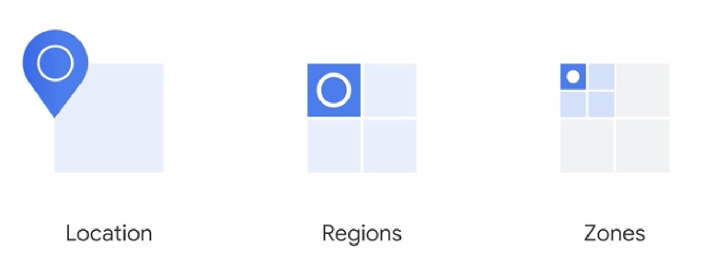
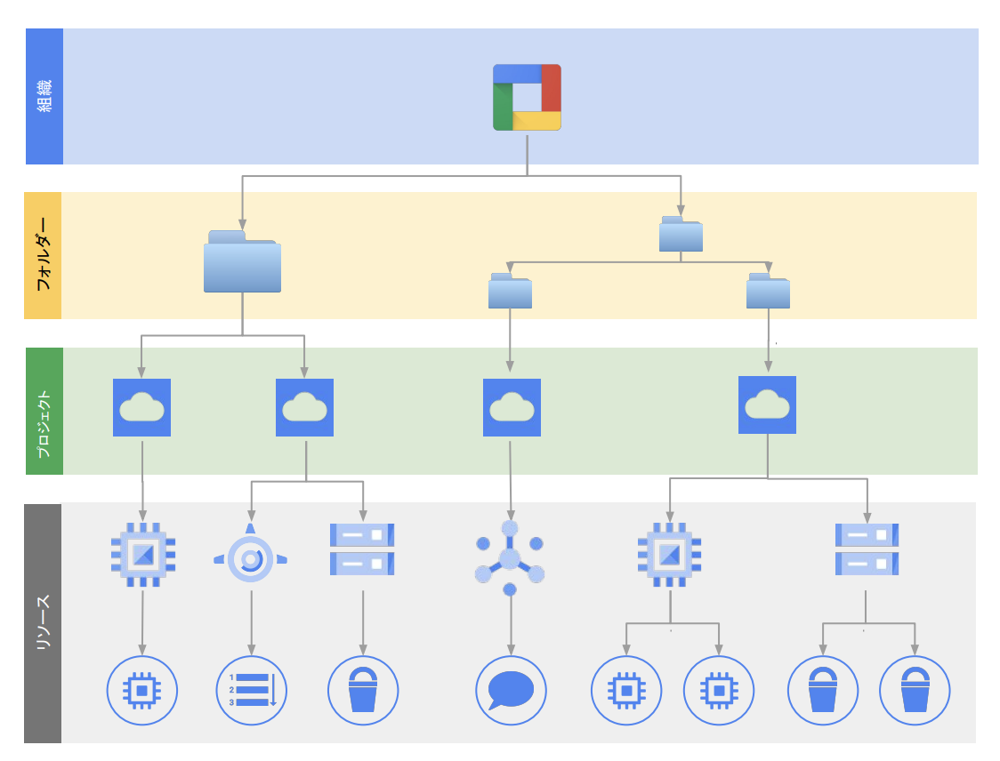

1. GCPについて¶
GCPは、Googleが提供するクラウドコンピューティングプラットフォーム。 GCPを使うことで、Google社内で使われているものと同じテクノロジーやサービスを利用することができる。 GCPにはフルマネージド、サーバレスを含む100を超えるサービスが存在しており、GCPのサービスを利用することで、柔軟性や拡張性、高速なシステム好移築を行うことができる。
GCPの重要な思想としてオープンクラウドという考えがある。
オープンクラウドでは、ベンダーロックインを良しとせず、獲得した技術的な知見を異なるクラウドでも利用できるようにすることを推奨している。そのため、googleは多くの技術をOSS（K8s/Tensorflow etc..）として公開し、OSSの活用やコミュニティとして発展させることを目指している。
1.1. ドキュメント¶
1.2. インフラ¶
GCPは、200以上の国と地域に独自のネットワークを展開しており、40のリージョンと121のゾーンで展開されている。 GCPのリージョン間は、Googleが独自に構築したインターネットを経由しないプライベートネットワークで通信を行う。
GCPにおけるインフラはロケーション・リージョン・ゾーンという階層構造になっている。

Google Cloud Fundamentals: Core Infrastructure 日本語版
階層 |
単位 |
説明 |
|---|---|---|
ロケーション（Location） |
マルチリージョン / リージョン |
論理的な配置の単位。複数のリージョンをまとめた地理的な分類。 |
リージョン（Region） |
複数のゾーン |
同一地域に配置されたゾーン群。低レイテンシ通信が可能。高可用性アーキテクチャの構築単位。 |
ゾーン（Zone） |
1つのデータセンター相当 |
インフラストラクチャの最小単位。VMなどのリソース配置単位であり、障害はゾーン単位で発生する可能性がある。 |
複数ゾーンでサービスを構成するとマルチゾーン構成、複数リージョンでサービスを構成するとマルチリージョン構成となり、冗長性を高めることができるが、費用とのトレードオフ関係になる。
GCPのサービスの中には、CloudCDN、Cloud DNS,Cloud Armorのようにリージョンに依存しないグローバルサービスが存在する。
1.3. リソース構成¶
GCPにおけるリソースの階層構造は以下の通りで、組織、フォルダ、プロジェクトで構成される。
プロジェクト内に、具体的なGCPのリソースが所属する。
 まずは知っておくべき IAM の基礎と最新の便利機能
階層 |
要素 |
説明 |
主な用途・備考 |
|---|---|---|---|
🏢 1 |
組織（Organization） |
GCP全体の最上位階層。ドメイン（例：example.com）に紐づく1つの組織。 |
大企業・法人向け。すべてのリソースの親。 |
📁 2 |
フォルダ（Folder） |
プロジェクトをグルーピングする中間階層。部門単位、環境（dev/stg/prd）単位などで利用。 |
IAMやポリシーの継承に使える。多階層可。 |
📦 3 |
プロジェクト（Project） |
実際のGCPサービスを利用するための基本単位。課金、IAM、API有効化などすべてここで行う。 |
GCPリソースはすべてプロジェクトに属する。 |
🔧 4 |
リソース（Resource） |
VM、Cloud Storage、Pub/Subなどの個別サービス。実体となるコンピューティングやストレージ。 |
すべてのリソースは1つのプロジェクトに属する。 |
組織、フォルダ、プロジェクトもリソースであるため、IAMポリシーを設定することが可能。 上位階層にポリシーを設定することで、下位階層に対してポリシーを継承することができる。
注意点として、組織で設定したIAMポリシーについては、下位階層側でoverrideが可能。
一方で、enforce = trueとすることで、下位階層でのoverrideを禁止することもできる。
プロジェクトを作成すると、以下のプロジェクトID・プロジェクト番号・プロジェクト名が決まる。 それぞれの役割は以下。
項目 |
説明 |
変更可否 |
ユニーク性 |
誰が指定するか |
用途・備考 |
|---|---|---|---|---|---|
プロジェクトID (projectId) |
GCP上で一意の文字列ID。ユーザーが一度指定（自動候補あり）し、以後変更不可。API・CLIでよく使われる。 |
❌変更不可 |
✅一意 |
ユーザーが指定（自動候補あり） |
多くのAPIでこのIDを使ってプロジェクトを指定 |
プロジェクト番号 (projectNumber) |
GCPが自動的に発行する内部的に一意な数値ID。IAMや課金設定で利用されることがある。 |
❌変更不可 |
✅一意 |
GCPが自動で発行 |
通常は意識されないが、一部APIやログで使われる |
プロジェクト名 (name) |
表示用の名称。一意である必要はなく、いつでも変更可能。UIでの識別に使われる。 |
✅変更可 |
❌重複可 |
ユーザーが自由に設定 |
管理コンソールなどの画面に表示されるラベル的な存在 |
1.4. 権限管理¶
1.4.1. リソース・ユーザーの管理¶
リソースやユーザーの管理にはIAM（Identity and Access Management）を利用する。
IAMを利用することで、誰が、どういう操作を、何に対して、どういう条件でを制御することができる。
詳細は、別ページにまとめる。
1.5. 操作方法¶
GCPの基本的な操作はGoogle Cloud コンソールで行うことができる。GUIで操作性は高い。
コンソール上から操作を行う際には、プロジェクトを指定する必要がある。
Google Cloud のコンソール上から簡単に選択できるので、間違えないように権限管理をきちんとする。
また、Cloud Shellを利用することでGCPのコンソールからShellを実行する完了を準備することができる。